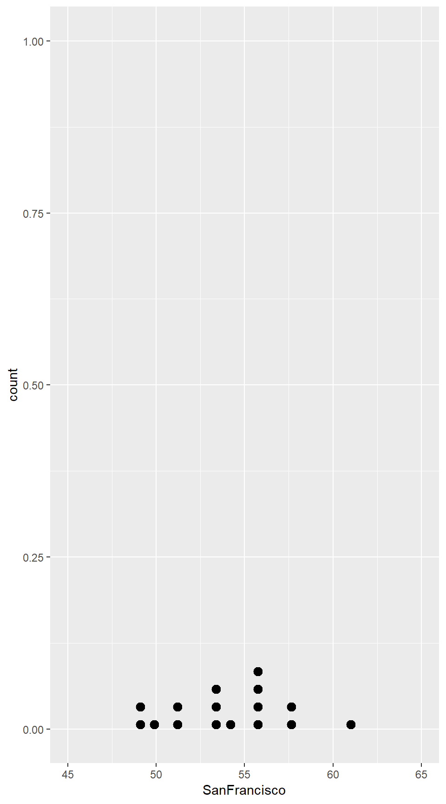
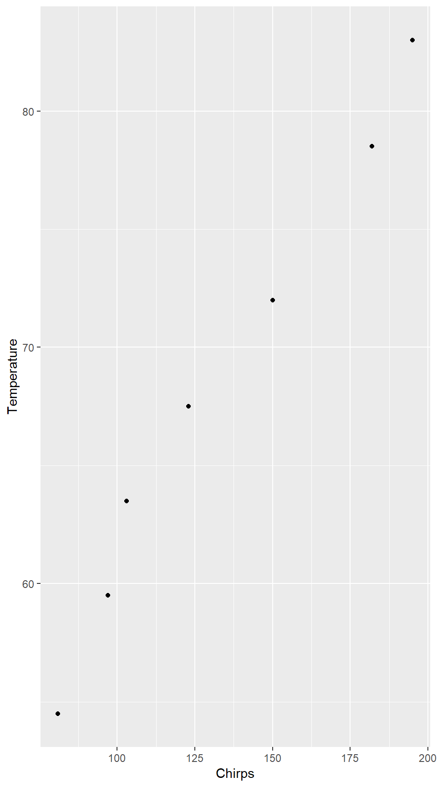
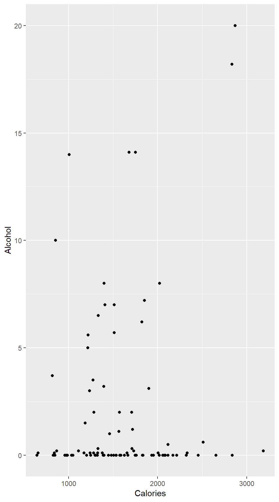

2 Describing Data
In this chapter we discuss graphical and numerical summaries of data.
2.1 Categorical Variables
Let us investigate categorical variables in R by taking a look at the data set for the One True Love survey. Notice that the data set is not readily available in our textbook’s package. However, the authors do provide us with the necessary information to create our own data spreadsheet (in either Excel or Google) and import it into R (See Chapter 0 for instructions.)
OneTrueLove <- read.file( "OneTrueLove.csv" )## Reading data with read.csv()Alternatively, we can read from a URL like this
OneTrueLove2 <-
read.file("https://raw.githubusercontent.com/rpruim/Lock5withR/master/Book/OneTrueLove.csv")One Categorical Variable
From the dataset we named as OneTrueLove, we can use the prop() function to quickly find proportions.
prop( ~ Response, data = OneTrueLove)## prop_Agree
## 0.28Table 2.1
We can also tabulate the categorical variable to display the frequency by using the tally() function. The default in tallying is to not include the row totals, or column totals when there are two variables. These are called marginal totals and if you want them, you can change the default.
tally( ~ Response, margin = TRUE, data = OneTrueLove)## Response
## Agree Disagree Don't know Total
## 735 1812 78 2625Example 2.3
To find the proportion of responders who disagree or don’t know, we can use the level= argument in the function to find proportions.
prop( ~ Response, success = "Disagree", data = OneTrueLove)## prop_Disagree
## 0.6902857prop( ~ Response, success = "Don't know", data = OneTrueLove)## prop_Don't know
## 0.02971429Further, we can also display the relative frequencies, or proportions in a table.
tally( ~ Response, format = "proportion", margin = TRUE, data = OneTrueLove)## Response
## Agree Disagree Don't know Total
## 0.28000000 0.69028571 0.02971429 1.00000000Figure 2.1
R provides many different chart and plot functions, including bar charts and pie charts, to visualize counts or proportions. Bar charts, also known as bar graphs, are a way of displaying the distribution of a categorical variable.
gf_bar( ~ Response, data = OneTrueLove)Two Categorical Variables: Two-Way Tables
Often, it is useful to compute cross tables for two (or more) variables. We can again use tally() for several ways to investigate a two-way table.
Table 2.3
tally( ~ Response + Gender, data = OneTrueLove)## Gender
## Response Female Male
## Agree 363 372
## Disagree 1005 807
## Don't know 44 34Table 2.4
tally( ~ Response + Gender, margins = TRUE, data = OneTrueLove)## Gender
## Response Female Male Total
## Agree 363 372 735
## Disagree 1005 807 1812
## Don't know 44 34 78
## Total 1412 1213 2625Example 2.5
Similar to one categorical variable, we can use the prop() function to find the proportion of two variables. The first line results in the proportion of females who agree and the proportion of males who agree. The second line shows the proportion who agree that are female and the proportion who disagree that are female. The third results in the proportion of all the survey responders that are female.
prop(Response~Gender, data = OneTrueLove)## prop_Agree.Female prop_Agree.Male
## 0.2570822 0.3066777prop(Gender~Response, data = OneTrueLove)## prop_Female.Agree prop_Female.Disagree prop_Female.Don't know
## 0.4938776 0.5546358 0.5641026prop( ~ Gender, data = OneTrueLove)## prop_Female
## 0.5379048See though that because we have multiple levels of each variable, this process can become quite tedious if we want to find the proportions for all of the levels. Using the tally function a little differently will result in these proportions.
tally(Response ~ Gender, data = OneTrueLove)## Gender
## Response Female Male
## Agree 363 372
## Disagree 1005 807
## Don't know 44 34tally( ~ Response | Gender, data = OneTrueLove)## Gender
## Response Female Male
## Agree 363 372
## Disagree 1005 807
## Don't know 44 34tally(Gender ~ Response, data = OneTrueLove)## Response
## Gender Agree Disagree Don't know
## Female 363 1005 44
## Male 372 807 34tally( ~ Gender | Response, data = OneTrueLove)## Response
## Gender Agree Disagree Don't know
## Female 363 1005 44
## Male 372 807 34Notice that (by default) some of these use counts and some use proportions. Again, we can change the format.
tally( ~ Gender, format = "percent", data = OneTrueLove)## Gender
## Female Male
## 53.79048 46.20952Example 2.6
tally( ~ Gender + Award, margin = TRUE, data = StudentSurvey)## Award
## Gender Academy Nobel Olympic Total
## F 20 76 73 169
## M 11 73 109 193
## Total 31 149 182 362Also, we can arrange the table differently by converting it to a data frame.
as.data.frame(tally( ~ Gender + Award, data = StudentSurvey))## Gender Award Freq
## 1 F Academy 20
## 2 M Academy 11
## 3 F Nobel 76
## 4 M Nobel 73
## 5 F Olympic 73
## 6 M Olympic 109prop( ~ Award, success = "Olympic", data = StudentSurvey)## prop_Olympic
## 0.5027624Example 2.7
To calculate the difference of certain statistics, we can use the diff() function. Here we use it to find the difference in proportions, but it can be used for means, medians, and etc.
diff(prop(Award~Gender, success = "Olympic", data = StudentSurvey))## prop_Olympic.M
## 0.1328142We will continue more with proportions in Chapter 3.
Figure 2.2
A way to look at multiple groups simultaneously is by using comparative plots such as a segmented bar chart or side-by-side bar chart. We often use the fill argument for this. fill is used when the assigned data is represented as an area, rather than a line or point. 3
Notice the addition of fill= (to group) and position= (to segment the graph). The default of position= is to stack the bar graph, so for the first example we can disclude the argument. TEX COMMAND NOT FOUND authNote Rewrote paragraph and footnote
gf_bar( ~ Award, fill = ~Gender, data = StudentSurvey)gf_bar( ~ Gender, fill = ~Award, position = 'dodge', data = StudentSurvey)2.2 One Quantitative Variable: Shape and Center
The distribution of a variable answers two questions:
- What values can the variable have?
- With what frequency does each value occur?
Again, the frequency may be described in terms of counts, proportions (often called relative frequency), or densities (more on densities later).
A distribution may be described using a table (listing values and frequencies) or a graph (e.g., a histogram) or with words that describe general features of the distribution (e.g., symmetric, skewed).
The Shape of a Distribution
Table 2.14
MammalLongevity## Animal Gestation Longevity
## 1 baboon 187 20
## 2 bear,black 219 18
## 3 bear,grizzly 225 25
## 4 bear,polar 240 20
## 5 beaver 122 5
## 6 buffalo 278 15
## 7 camel 406 12
## 8 cat 63 12
## 9 chimpanzee 231 20
## 10 chipmunk 31 6
## 11 cow 284 15
## 12 deer 201 8
## 13 dog 61 12
## 14 donkey 365 12
## 15 elephant 645 40
## 16 elk 250 15
## 17 fox 52 7
## 18 giraffe 425 10
## 19 goat 151 8
## 20 gorilla 257 20
## 21 guinea pig 68 4
## 22 hippopotamus 238 25
## 23 horse 330 20
## 24 kangaroo 42 7
## 25 leopard 98 12
## 26 lion 100 15
## 27 monkey 164 15
## 28 moose 240 12
## 29 mouse 21 3
## 30 opposum 15 1
## 31 pig 112 10
## 32 puma 90 12
## 33 rabbit 31 5
## 34 rhinoceros 450 15
## 35 sea lion 350 12
## 36 sheep 154 12
## 37 squirrel 44 10
## 38 tiger 105 16
## 39 wolf 63 5
## 40 zebra 365 15Statisticians have devised a number of graphs to help us see distributions visually.
The general syntax for making a graph of one variable in a data frame is
plotname( ~ variable, data = dataName)In other words, there are three pieces of information we must provide to R in order to get the plot we want:
The kind of plot (`gf_histogram()`, `gf_bar()`,gf_dens(), etc.) #. The name of the variable #. The name of the data frame this variable is a part of.
This should look familiar from the previous section.
Figure 2.6
Let’s make a dot plot of the variable Longevity in the MammalLongevity data set for a quick and simple look at the distribution. We use the syntax provided above with two additional arguments to make the figure look the way we want it to. The next few sections will explain a few of the different arguments available for plots in R
gf_dotplot(~ Longevity, binwidth = 1, dotsize = .75, data = MammalLongevity)Table 2.15
Although tally() works with quantitative variables as well as categorical variables, this is only useful when there are not too many different values for the variable.
tally( ~ Longevity, margin = TRUE, data = MammalLongevity)## Longevity
## 1 3 4 5 6 7 8 10 12 15 16 18
## 1 1 1 3 1 2 2 3 9 7 1 1
## 20 25 40 Total
## 5 2 1 40Sometimes, it is more convenient to group them into bins. We just have to tell R what the bins are. For example, suppose we wanted to group together by 5. cut() tally()
binned.long <- cut(MammalLongevity$Longevity, breaks = c(0,5,10,15,20,25,30,35,40))
tally( ~ binned.long) # no data frame given because it is not in a data frame## binned.long
## (0,5] (5,10] (10,15] (15,20] (20,25] (25,30] (30,35] (35,40]
## 6 8 16 7 2 0 0 1Suppose we wanted to group the 1s, 10s, 20s, etc. together. We want to make sure then that 10 is with the 10s, so we should add another argument. <<Table2.15c>>= binned.long2 <- cut(MammalLongevity$Longevity, breaks = c(0,10,20,30,40,50), right = FALSE) tally( ~ binned.long2) # no data frame given because it is not in a data frame @
We won’t use this very often however, since seeing this information in a histogram is typically more useful.
Figure 2.7
Histograms are a way of displaying the distribution of a quantitative variable. <<Figure2.7>>= gf_histogram( ~ Longevity, binwidth = 5, data = MammalLongevity) @
We can control the (approximate) number of bins using the bins argument. The number of bins (and to a lesser extent the positions of the bins) can make a histogram look quite different.
gf_histogram( ~ Longevity, data = MammalLongevity, bins = 8)gf_histogram( ~ Longevity, data = MammalLongevity, bins = 15)gf_histogram( ~ Longevity, data = MammalLongevity, bins = 30)We can also describe the bins in terms of width instead of in terms of the number of bins. This is especially nice for count or other integer data.
gf_histogram( ~ Longevity, data = MammalLongevity, binwidth = 10)gf_histogram( ~ Longevity, data = MammalLongevity, binwidth = 5)gf_histogram( ~ Longevity, data = MammalLongevity, binwidth = 2)Figure 2.8
The various options available for the gf_histogram() function enable us to replicate Figure 2.8, some including closing, adding counts, labels, and limit to the y-axis (similar for x-axis). Using gf_dhistogram() measures the y-axis by density rather than count. This is useful for determing relative amounts.
gf_histogram( ~ Pulse, binwidth = 5, data = StudentSurvey)gf_histogram( ~ Exercise, binwidth = 2, closed = 'left',
data = StudentSurvey)gf_dhistogram( ~Piercings, binwidth = 1, data = StudentSurvey)Sometimes a frequency polygon provides a more useful view.
The only thing that changes is gf_histogram() becomes gf_freqpoly().
gf_freqpoly(..density.. ~ Exercise, bins = 10, data = StudentSurvey)What is a frequency polygon? The picture below shows how it is related to a histogram. The frequency polygon is just a dot-to-dot drawing through the centers of the tops of the bars of the histogram.
R also provides a “smooth” version called a density plot; just change the function name from gf_histogram() to gf_density(), also gf_dens() is a modified version of gf_density() that isn’t shaded in and may be useful for layering plots.
gf_density( ~ Longevity, data = MammalLongevity)gf_dens( ~ BirthRate, data = AllCountries )If we make a histogram (or any of these other plots) of our data, we can describe the overall shape of the distribution. Keep in mind that the shape of a particular histogram may depend on the choice of bins. Choosing too many or too few bins can hide the true shape of the distribution. (When in doubt, make more than one histogram.)
Here are some words we use to describe shapes of distributions.
- symmetric The left and right sides are mirror images of each other.
- skewed The distribution stretches out farther in one direction than in the other.
(We say the distribution is skewed toward the long tail.) - uniform The heights of all the bars are (roughly) the same.
(So the data are equally likely to be anywhere within some range.) - unimodal There is one major “bump” where there is a lot of data.
- bimodal There are two “bumps”.
- outlier An observation that does not fit the overall pattern of the rest of the data.
The Center of a Distribution
Recall that a statistic is a number computed from data. The mean and the median are key statistics which describe the center of a distribution. We can see through Example 2.11 that numerical summaries are computed using the same template as graphical summaries.
Note that the example asks about subsets of ICUAdmissions–specifically about 20-year-old and 55-year-old patients. In this case, we can manipulate the data (to name a new data set) with the subset command. Here are some examples.
Select only the males from the <span style="color:blue">ICUAdmissions</span> data set.
head(ICUAdmissions, 2)## ID Status Age Sex Race Service Cancer Renal Infection CPR Systolic
## 1 8 0 27 1 1 0 0 0 1 0 142
## 2 12 0 59 0 1 0 0 0 0 0 112
## HeartRate Previous Type Fracture PO2 PH PCO2 Bicarbonate Creatinine
## 1 88 0 1 0 0 0 0 0 0
## 2 80 1 1 0 0 0 0 0 0
## Consciousness status sex race service cancer renal infection cpr
## 1 1 Lived Female White Medical No No Yes No
## 2 1 Lived Male White Medical No No No No
## previous type pO2low pO2 pHlow pH pCO2hi pCO2 bicarbonateLow
## 1 No Emergency No Hi No Hi No Low No
## 2 Yes Emergency No Hi No Hi No Low No
## bicarbonate creatinineHi creatinine consciousness
## 1 Hi No Low Conscious
## 2 Hi No Low Conscioustally( ~ sex, data = ICUAdmissions) ## sex
## Female Male
## 76 124ICUMales <- subset(ICUAdmissions, sex == "Male") # notice the double =
tally( ~ sex, data = ICUMales)## sex
## Female Male
## 0 124#. Select only the subjects over 50:ICUOld <- subset(ICUAdmissions, Age > 50) The subset() function can use any condition that evaluates to TRUE or FALSE for each row (case) in the data set.
Example 2.11
ICU20 <- subset(ICUAdmissions, Age == "20")
mean( ~ HeartRate, data = ICU20)## [1] 82.2median( ~ HeartRate, data = ICU20)## [1] 80ICU55 = subset(ICUAdmissions, Age == "55")
mean( ~ HeartRate, data = ICU55)## [1] 108.5median( ~ HeartRate, data = ICU55)## [1] 106Resistance
Figure 2.10
head(FloridaLakes)## ID Lake Alkalinity pH Calcium Chlorophyll AvgMercury NumSamples
## 1 1 Alligator 5.9 6.1 3.0 0.7 1.23 5
## 2 2 Annie 3.5 5.1 1.9 3.2 1.33 7
## 3 3 Apopka 116.0 9.1 44.1 128.3 0.04 6
## 4 4 Blue Cypress 39.4 6.9 16.4 3.5 0.44 12
## 5 5 Brick 2.5 4.6 2.9 1.8 1.20 12
## 6 6 Bryant 19.6 7.3 4.5 44.1 0.27 14
## MinMercury MaxMercury ThreeYrStdMercury AgeData
## 1 0.85 1.43 1.53 1
## 2 0.92 1.90 1.33 0
## 3 0.04 0.06 0.04 0
## 4 0.13 0.84 0.44 0
## 5 0.69 1.50 1.33 1
## 6 0.04 0.48 0.25 1gf_histogram( ~ Alkalinity, binwidth = 10, data = FloridaLakes)Example 2.14
mean( ~ Alkalinity, data = FloridaLakes)## [1] 37.53019median( ~ Alkalinity, data = FloridaLakes)## [1] 19.62.3 One Quantitative Variable: Measures of Spread
In the previous section, we investigated center summary statistics. In this section, we will cover some other important statistics.
Example 2.15
summary(April14Temps)## Year DesMoines SanFrancisco
## Min. :1995 Min. :37.20 Min. :48.70
## 1st Qu.:1999 1st Qu.:44.40 1st Qu.:51.30
## Median :2002 Median :54.50 Median :54.00
## Mean :2002 Mean :54.49 Mean :54.01
## 3rd Qu.:2006 3rd Qu.:61.27 3rd Qu.:55.90
## Max. :2010 Max. :74.90 Max. :61.00favstats( ~ DesMoines, data = April14Temps) # some favorite statistics## min Q1 median Q3 max mean sd n missing
## 37.2 44.4 54.5 61.275 74.9 54.4875 11.7303 16 0favstats( ~ SanFrancisco, data = April14Temps)## min Q1 median Q3 max mean sd n missing
## 48.7 51.3 54 55.9 61 54.0125 3.376956 16 0Standard Deviation
The density plots of the temperatures of Des Moines and San Francisco reveal that Des Moines has a greater variability or spread.
Figure 2.18
The argument controls character expansion" and can be used to make the plottingcharacters" larger or smaller by specifying the scaling ratio. allows you to adjust the vertical distance between points. Chaining lets you set the limits for the x and y-axes.
gf_dotplot( ~ DesMoines, binwidth = 1, dotsize = 2, stackratio = 3,
data = April14Temps) %>% gf_lims(x = c(35, 80))gf_dotplot( ~ SanFrancisco, binwidth = 1, dotsize = .5, stackratio = 2,
data = April14Temps) %>% gf_lims(x = c(45, 65))
Example 2.16
Although both summary() and favstats() calculate the standard deviation of a variable, we can also use sd() to find just the standard deviation.
sd( ~ DesMoines, data = April14Temps) ## [1] 11.7303sd( ~ SanFrancisco, data = April14Temps)## [1] 3.376956var( ~ DesMoines, data = April14Temps) # variance = sd^2## [1] 137.5998Example 2.17
To see that the distribution is indeed symmetric and approximately bell-shaped, you can chain the function gf_dens(). It can be helpful to set alpha (the transparency argument) lower than 1 to make the plot easier to read.
gf_dhistogram( ~ Pulse, data = StudentSurvey, alpha = .5) %>% gf_dens( ~ Pulse)mean <- mean( ~ Pulse, data = StudentSurvey); mean## [1] 69.57459sd <- sd( ~ Pulse, data = StudentSurvey); sd## [1] 12.20514mean - 2*sd## [1] 45.16431mean + 2*sd## [1] 93.98486Figure 2.20
gf_dhistogram( ~ Sales, binwidth = 25, data = RetailSales)Example 2.18
mean <- mean( ~ Sales, data = RetailSales); mean## [1] 296.4382sd <- sd( ~ Sales, data = RetailSales); sd## [1] 37.97074mean - 2*sd## [1] 220.4968mean + 2*sd## [1] 372.3797Example 2.19
Z-scores can be computed as follows:
( 204 - mean( ~ Systolic, data = ICUAdmissions) ) / sd( ~ Systolic, data = ICUAdmissions)## [1] 2.176493( 52 - mean( ~ HeartRate, data = ICUAdmissions) ) / sd( ~ HeartRate, data = ICUAdmissions)## [1] -1.749Percentiles
Figure 2.21
gf_histogram( ~ Close, binwidth = 25, data = SandP500)Example 2.20
The text uses a histogram to estimate the percentile of the daily closing price for the
S&P 500 but we can also find the exact percentiles using the quantile() function.
quantile(SandP500$Close, probs = seq(0, 1, 0.25))## 0% 25% 50% 75% 100%
## 1022.580 1094.802 1136.985 1183.372 1259.780quantile(SandP500$Close, probs = seq(0, 1, 0.90))## 0% 90%
## 1022.580 1216.906Five Number Summary
We have already covered many different functions which results in the five number summary but fivenum() is most direct way to obtain in the five number summary.
Example 2.21
fivenum( ~ Exercise, data = StudentSurvey)Example 2.22
fivenum( ~ Longevity, data = MammalLongevity)## [1] 1.0 8.0 12.0 15.5 40.0min( ~ Longevity, data = MammalLongevity) ## [1] 1max( ~ Longevity, data = MammalLongevity) ## [1] 40range( ~ Longevity, data = MammalLongevity) # subtract to get the numerical range value## [1] 1 40iqr( ~ Longevity, data = MammalLongevity) # interquartile range ## [1] 7.25Note the difference in the quartile and IQR from the textbook. This results because there are several different methods to determine the quartile.
Example 2.23
fivenum( ~ DesMoines, data = April14Temps)## [1] 37.20 44.40 54.50 61.95 74.90fivenum( ~ SanFrancisco, data = April14Temps)## [1] 48.7 51.2 54.0 56.0 61.0range( ~ DesMoines, data = April14Temps)## [1] 37.2 74.9diff(range( ~ DesMoines, data = April14Temps))## [1] 37.7range( ~ SanFrancisco, data = April14Temps)## [1] 48.7 61.0diff(range( ~ SanFrancisco, data = April14Temps))## [1] 12.3iqr( ~ DesMoines, data = April14Temps)## [1] 16.875iqr( ~ SanFrancisco, data = April14Temps)## [1] 4.62.4 Outliers, Boxplots, and Quantitative/Categorical Relationships
Detection of Outliers
Generally, outliers are considered to be values
- less than \(Q_1 - 1.5 TEX COMMAND NOT FOUND cdot (IQR)\), and
- greater than \(Q_3 + 1.5 TEX COMMAND NOT FOUND cdot (IQR)\).
2.4.0.1 Example 2.25
fivenum( ~ Longevity, data = MammalLongevity)## [1] 1.0 8.0 12.0 15.5 40.0iqr( ~ Longevity, data = MammalLongevity)## [1] 7.258.0-1.5*7.25## [1] -2.87515.5+1.5*7.25## [1] 26.375subset(MammalLongevity, Longevity>26.375)## Animal Gestation Longevity
## 15 elephant 645 40There is no function in R that directly results in outliers because practically, there is no one specific formula for such a determination. However, a boxplot will indirectly reveal outliers.
Boxplots
A way to visualize the five number summary and outliers for a variable is to create a boxplot.
Example 2.26
favstats( ~ Longevity, data = MammalLongevity)## min Q1 median Q3 max mean sd n missing
## 1 8 12 15.25 40 13.15 7.244981 40 0gf_boxplot(Longevity ~ ", xlab = ", data = MammalLongevity) %>%
gf_refine(coord_flip())Figure 2.32
gf_boxplot(Smokers ~ ", xlab = ", data = USStates) %>%
gf_refine(coord_flip())Example 2.27
We can similarity investigate the Smokers variable in USStates.
fivenum( ~ Smokers, data = USStates)## [1] 11.5 19.3 20.6 22.6 28.7The boxplot reveals two outliers. To identify them, we can again use subset() for smokers greater or less than the whiskers of the boxplot.
subset(USStates, Smokers<15)## State HouseholdIncome IQ McCainVote Region ObamaMcCain Population
## 44 Utah 55619 101.1 0.629 W M 2.420708
## EighthGradeMath HighSchool GSP FiveVegetables Smokers
## 44 279.16 91 36758 22.1 11.5
## PhysicalActivity Obese College NonWhite HeavyDrinkers Pres2008
## 44 83.1 21.2 31 12.1 2.9 McCainsubset(USStates, Smokers>28)## State HouseholdIncome IQ McCainVote Region ObamaMcCain Population
## 17 Kentucky 38694 99.4 0.575 MW M 4.141835
## EighthGradeMath HighSchool GSP FiveVegetables Smokers
## 17 273.98 81.8 33666 16.8 28.7
## PhysicalActivity Obese College NonWhite HeavyDrinkers Pres2008
## 17 70.1 28.6 22.6 9.4 2.7 McCainFigure 2.33
gf_boxplot(Budget ~ ", xlab = ", data = HollywoodMovies2011) %>%
gf_refine(coord_flip())Example 2.28
subset(HollywoodMovies2011, Budget>225)## Movie LeadStudio RottenTomatoes
## 30 Pirates of the Caribbean:\nOn Stranger Tides Disney 34
## AudienceScore Story Genre TheatersOpenWeek BOAverageOpenWeek
## 30 61 Quest Action 4155 21697
## DomesticGross ForeignGross WorldGross Budget Profitability
## 30 241.07 802.8 1043.871 250 4.175484
## OpeningWeekend
## 30 90.15head(HollywoodMovies2011)## Movie LeadStudio
## 1 Insidious Sony
## 2 Paranormal Activity 3 Independent
## 3 Bad Teacher Independent
## 4 Harry Potter and the Deathly Hallows Part 2 Warner Bros
## 5 Bridesmaids Relativity Media
## 6 Midnight in Paris Sony
## RottenTomatoes AudienceScore Story Genre TheatersOpenWeek
## 1 67 65 Monster Force Horror 2408
## 2 68 58 Monster Force Horror 3321
## 3 44 38 Comedy Comedy 3049
## 4 96 92 Rivalry Fantasy 4375
## 5 90 77 Rivalry Comedy 2918
## 6 93 84 Love Romance 944
## BOAverageOpenWeek DomesticGross ForeignGross WorldGross Budget
## 1 5511 54.01 43.00 97.009 1.5
## 2 15829 103.66 98.24 201.897 5.0
## 3 10365 100.29 115.90 216.196 20.0
## 4 38672 381.01 947.10 1328.111 125.0
## 5 8995 169.11 119.28 288.382 32.5
## 6 6177 56.18 83.00 139.177 17.0
## Profitability OpeningWeekend
## 1 64.672667 13.27
## 2 40.379400 52.57
## 3 10.809800 31.60
## 4 10.624888 169.19
## 5 8.873292 26.25
## 6 8.186882 5.83One Quantitative and One Categorical Variable
The formula for a lattice plot can be extended to create multiple panels (sometimes called facets) based on a “condition”, often given by another variable. This is another way to look at multiple groups simultaneously. The general syntax for this becomes
plotname( ~ variable | condition, data = dataName )Figure 2.34
Depending on the type of plot, you will want to use conditioning.
gf_boxplot(TV ~ Gender, data = StudentSurvey) %>%
gf_refine(coord_flip())gf_dotplot( ~ TV|Gender, binwidth = 1, dotsize = .35, data = StudentSurvey)We can do the same thing for bar graphs.
gf_bar( ~ Award | Gender, data = StudentSurvey)This graph should be familiar as we have plotted these variables together previously. Here we used different panels, but before, in 2.1, we had used grouping. Note that we can combine grouping and conditioning in the same plot.
Example 2.31
favstats( ~ TV | Gender, data = StudentSurvey)
diffmean( ~ TV | Gender, data = StudentSurvey)2.5 Two Quantitative Variables: Scatterplot and Correlation
Example 2.32
ElectionMargin## Year Candidate Approval Margin Result
## 1 1940 Roosevelt 62 10.0 Won
## 2 1948 Truman 50 4.5 Won
## 3 1956 Eisenhower 70 15.4 Won
## 4 1964 Johnson 67 22.6 Won
## 5 1972 Nixon 57 23.2 Won
## 6 1976 Ford 48 -2.1 Lost
## 7 1980 Carter 31 -9.7 Lost
## 8 1984 Reagan 57 18.2 Won
## 9 1992 G.H.W.Bush 39 -5.5 Lost
## 10 1996 Clinton 55 8.5 Won
## 11 2004 G.W.Bush 49 2.4 WonVisualizing a Relationship between Two Quantitative Variables: Scatterplots
The most common way to look at two quantitative variables is with a scatterplot. The ggformula function for this is gf_point(), and the basic syntax is
gf_point(yvar ~ xvar, data = dataName)Notice that now we have something on both sides of the ~{} since we need to tell about two variables.
Example 2.33
gf_point(Margin ~ Approval, data = ElectionMargin)Figure 2.49
gf_point(AvgMercury ~ pH, data = FloridaLakes)gf_point(AvgMercury ~ Alkalinity, data = FloridaLakes)gf_point(Alkalinity ~ pH, data = FloridaLakes)gf_point(AvgMercury ~ ThreeYrStdMercury, data = FloridaLakes)Summarizing a Relationship between Two Quantitative Variables: Correlation
Another key numerical statistic is the correlation–the correlation is a measure of the strength and direction of the relationship between two quantitative variables.
cor(Margin ~ Approval, data = ElectionMargin)## [1] 0.8629926cor(AvgMercury ~ pH, data = FloridaLakes)## [1] -0.5754001cor(AvgMercury ~ Alkalinity, data = FloridaLakes)## [1] -0.5938967cor(Alkalinity ~ pH, data = FloridaLakes)## [1] 0.7191657cor(AvgMercury ~ ThreeYrStdMercury, data = FloridaLakes)## [1] 0.9592148Table 2.31
CricketChirps## Temperature Chirps
## 1 54.5 81
## 2 59.5 97
## 3 63.5 103
## 4 67.5 123
## 5 72.0 150
## 6 78.5 182
## 7 83.0 195Figure 2.50
gf_point(Temperature ~ Chirps, data = CricketChirps)
Example 2.35
cor(Temperature ~ Chirps, data = CricketChirps)## [1] 0.9906249Example 2.38
Further, using the subset() function again, we can investigate the correlation between variables with some restrictions.
gf_point(Alcohol ~ Calories, data = subset(NutritionStudy, Age>59))cor(Alcohol ~ Calories, data = subset(NutritionStudy, Age>59))## [1] 0.7199945And now we omit the outlier
NutritionStudy60 = subset(NutritionStudy, Age>59)
gf_point(Alcohol ~ Calories, data = subset(NutritionStudy60, Alcohol<25))
cor(Alcohol ~ Calories, data = subset(NutritionStudy60, Alcohol<25))## [1] 0.14496332.6 Two Quantitative Variables: Linear Regression
Figure 2.63
gf_point(Tip ~ Bill, size = .5, data = RestaurantTips)Example 2.39
When the relationship between variables is sufficiently linear, you may be able to predict the value of a variable using the other variable. This is possible by fitting a regression line. To plot this in R all we need to do is chain gf_lim() to the scatter plot and give it the corresponding arguments.
gf_point(Tip ~ Bill, cex = 0.5, data = RestaurantTips) %>% gf_lm(Tip ~ Bill, data = RestaurantTips)
cor(Tip ~ Bill, data = RestaurantTips)## [1] 0.9150592The equation for the regression line, or the prediction equation is \[ \widehat{\mbox{Response}} = a + b \cdot \mbox{Explanatory} \]
So now, we need to find the values for a, the intercept, and b, the slope using the function to fit linear models.
Example 2.41
lm(Tip ~ Bill, data = RestaurantTips)##
## Call:
## lm(formula = Tip ~ Bill, data = RestaurantTips)
##
## Coefficients:
## (Intercept) Bill
## -0.2923 0.1822coef(lm(Tip ~ Bill, data = RestaurantTips)) # just show me the coefficients## (Intercept) Bill
## -0.2922675 0.1822147This results in the equation \[ \widehat{\mbox{Tip}} = \Sexpr{tip.coefs$Intercept} + \Sexpr{tip.coefs$Bill} \cdot \mbox{Bill} \]
With this equation, one can predict the tip for different bill amounts.
Tip.Fun <- makeFun(lm(Tip ~ Bill, data = RestaurantTips)) # make a function of the linear model
Tip.Fun(Bill = 59.33) # predicted tip when bill is $59.33## 1
## 10.51853Tip.Fun(Bill = 9.52)## 1
## 1.442417Tip.Fun(Bill = 23.70)## 1
## 4.026222An important aspect of the linear regression is the difference between the prediction and actual observation. This is called the residual, defined
\[ \mbox{residual} = \mbox{observed response} - \mbox{predicted response} \]
Example 2.42
Resid.a <- 10.00 - 10.51 # predicted tip from Example 2.41
Resid.a## [1] -0.51Resid.b <- 1.00 - 1.44
Resid.b## [1] -0.44Resid.c <- 10.00 - 4.02
Resid.c## [1] 5.98Example 2.43
Elect.mod <- lm(Margin~Approval, data = ElectionMargin)
resid(lm(Margin~Approval, data = ElectionMargin))## 1 2 3 4 5 6
## -5.3228564 -0.7958766 -6.6075096 3.0992354 12.0550519 -5.7247133
## 7 8 9 10 11
## 0.8801748 7.0550519 -1.6044784 -0.9737848 -2.0602949Example 2.45
lm(AvgMercury ~ pH, data = FloridaLakes)##
## Call:
## lm(formula = AvgMercury ~ pH, data = FloridaLakes)
##
## Coefficients:
## (Intercept) pH
## 1.5309 -0.1523gf_point(AvgMercury ~ pH, data = FloridaLakes) %>% gf_lm(AvgMercury ~ pH, data = FloridaLakes)Mer.Fun <- makeFun(lm(AvgMercury ~ pH, data = FloridaLakes))
Mer.Fun(pH = 7.5) # predicted mercury level at 7.5 pH## 1
## 0.3886622Resid <- 1.10 - 0.388 # residual at 7.5 pH
Resid## [1] 0.712Example 2.46
Cal.Fun <- makeFun(lm(Calcium ~ pH, data = FloridaLakes))
Cal.Fun## function (pH, ..., transformation = function (x)
## x)
## return(transformation(predict(model, newdata = data.frame(pH = pH),
## ...)))
## <environment: 0x0000000020ab0448>
## attr(,"coefficients")
## (Intercept) pH
## -51.40157 11.16800Figure 2.68
gf_point(Calcium ~ pH, data = FloridaLakes) %>% gf_lm(Calcium ~ pH, data = FloridaLakes)–>
For coloring a line or point,
colour()is used↩